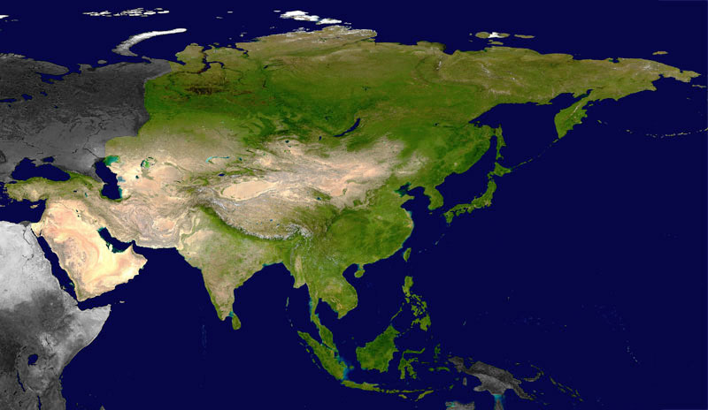

|  | ASIA |
Asia es el continente más grande y poblado del mundo, abarcando una gran parte del hemisferio oriental. Limita al oeste con Europa y África, al norte con el Ártico, al este con el océano Pacífico y al sur con el océano Índico. La diversidad geográfica y cultural en Asia es impresionante, y esto se refleja en su vasta extensión territorial. Asia es hogar de algunas de las civilizaciones más antiguas y avanzadas de la historia, incluyendo las de China, India y Mesopotamia. La región ha sido cuna de importantes avances en la ciencia, las matemáticas, la filosofía, el arte y la religión. Hoy en día, países como China, India, Japón y Corea del Sur son líderes en tecnología, economía y cultura. El continente presenta una gran diversidad cultural y religiosa, con el hinduismo, el budismo, el islam, el cristianismo y muchas otras creencias practicadas en toda la región. Además, Asia es conocida por su variada geografía, desde las altas montañas del Himalaya hasta los vastos desiertos de Gobi y Rub' al Khali, así como las fértiles llanuras del río Indo y el delta del Mekong. |
|